External Master-Thesis completed at
Fraunhofer-Institut für Elektronische Nanosysteme ENAS, Chemnitz
submitted by
Nandha Gopal Mariappan
Material: SAC (Sn-Ag-Cu) – Die attach material in power electronics due to its thermal and electrical properties.
Experimental Method: Damage evaluated in the die attach layer using Scanning Acoustic Microscopy (SAM) and Pulsed Infrared Thermography (PIRT) after passive thermal cycling tests.
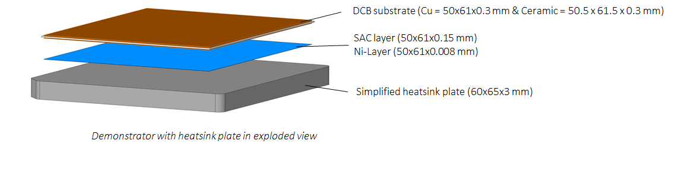
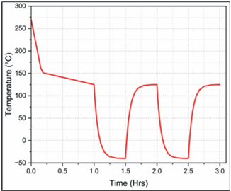
Table 1: Delamination in % over cycles through experimental method
| Cycles | Avg. Delamination in Die Attach (%) | Std. Deviation (%) |
|---|---|---|
| 0 | 7.67 | 0.34 |
| 200 | 11.76 | 0.83 |
| 400 | 13.10 | 1.30 |
| 600 | 14.12 | 1.54 |
| 800 | 16.92 | 1.32 |
| 1000 | 18.97 | 1.45 |
Aim of the thesis:
In this thesis, a power electronic component is modeled and simulated using the finite element software Abaqus. The simulation results are combined with analytical approaches—specifically, non-linear damage models—to predict the damage progression in the SAC (Sn-Ag-Cu) die attach layer. This methodology enables the evaluation of damage percentage without the need for physical testing, thereby saving time and resources while maintaining accuracy.
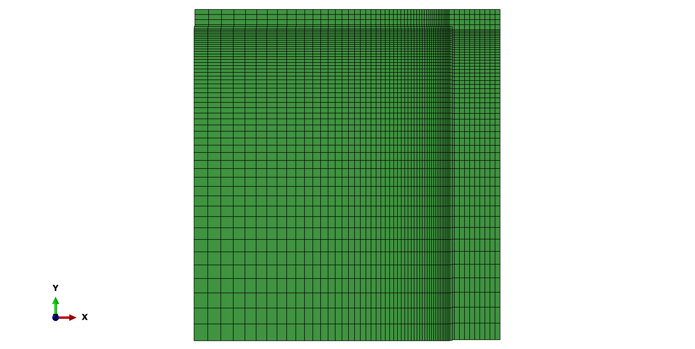
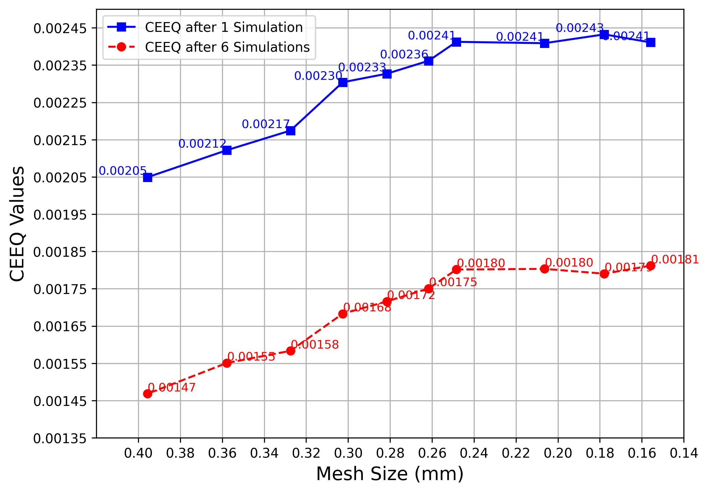
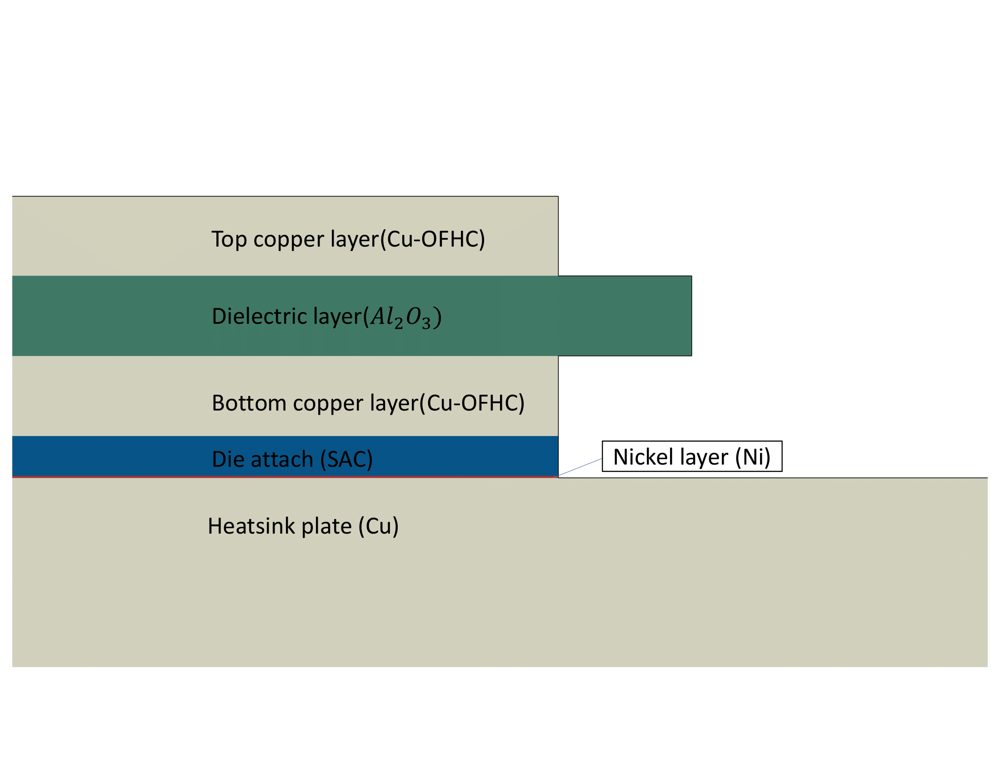
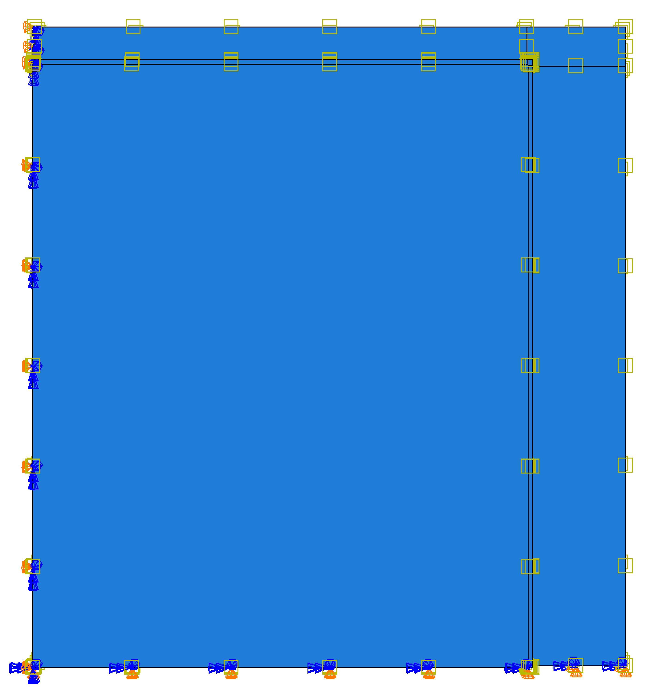
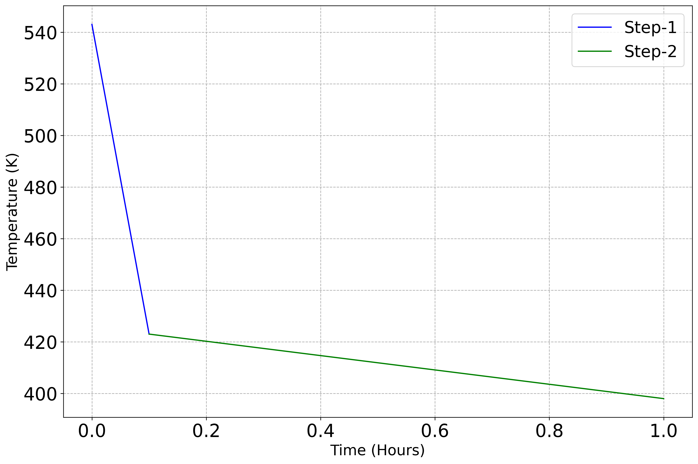
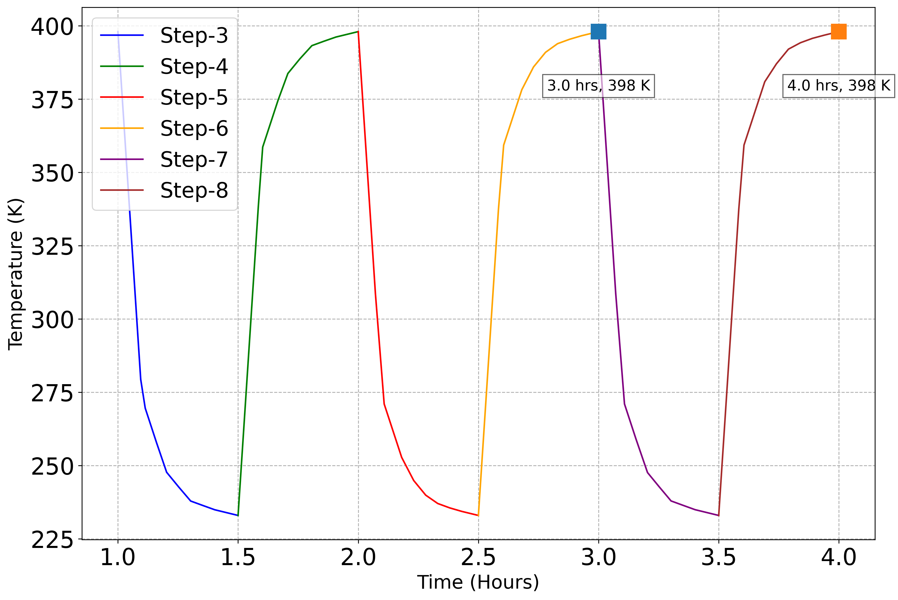
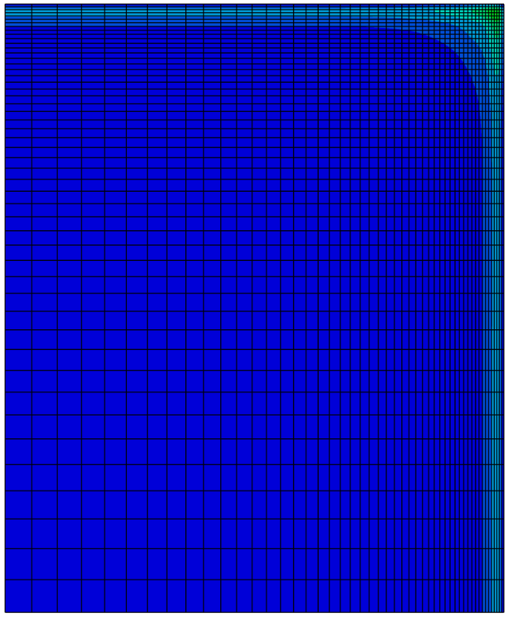
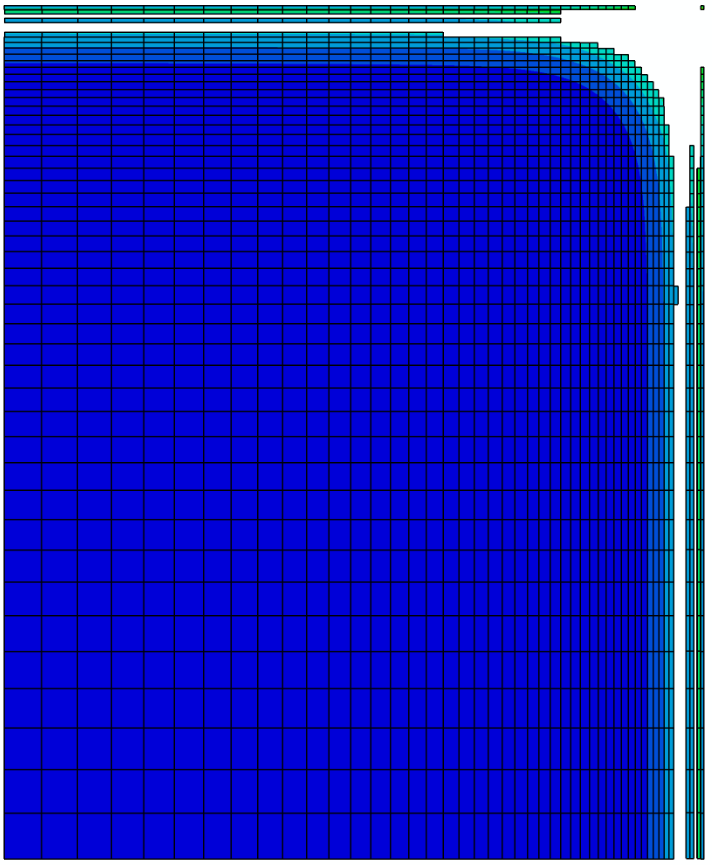
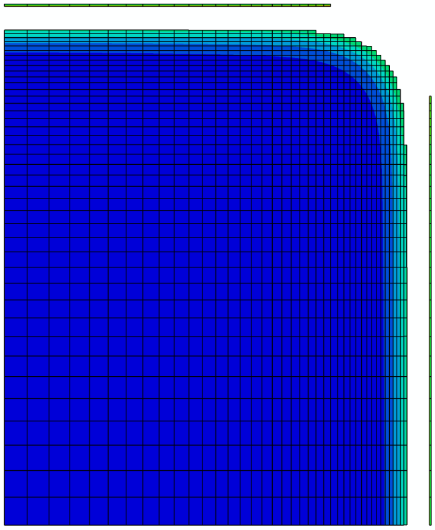
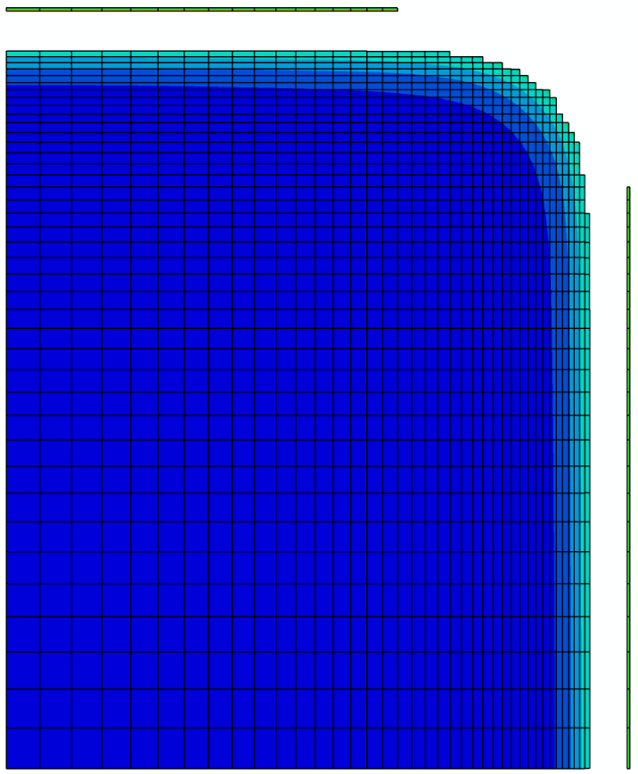
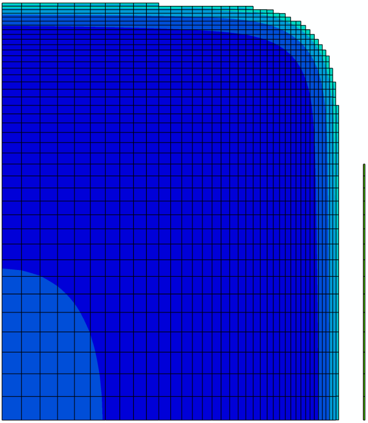
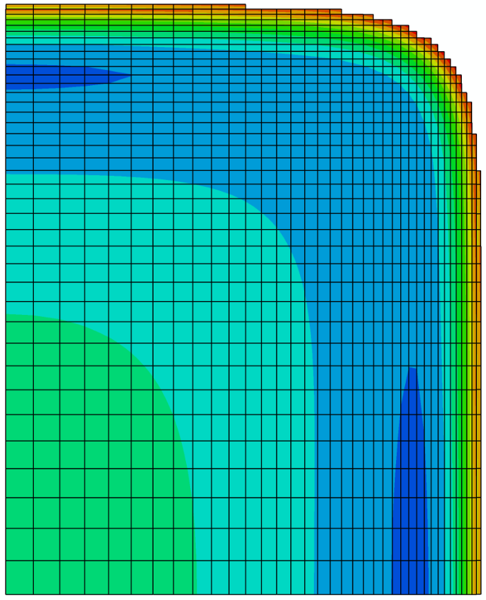
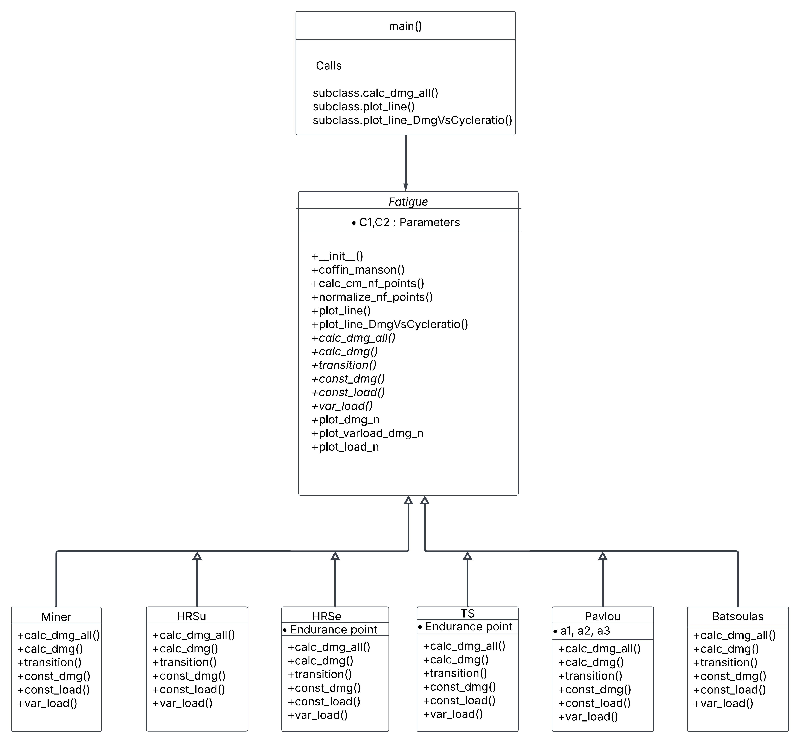
PINN Architecture
Input: Strain/Temp → Neural Network → Predicted Stress
Loss = MSE(Data) + λ · Loss(Viscoplastic Residuals)
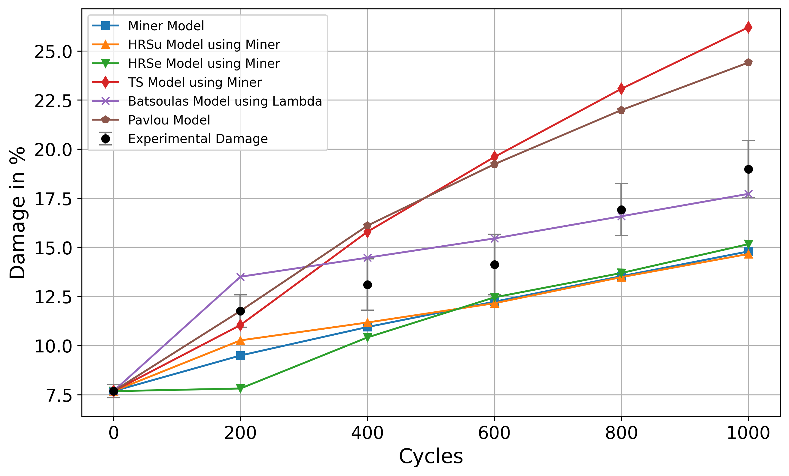
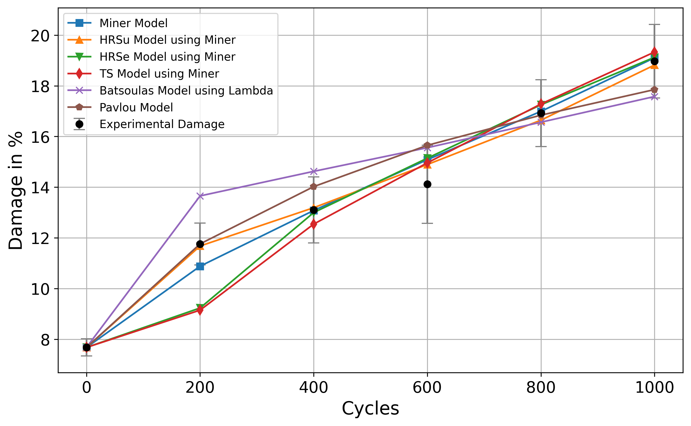